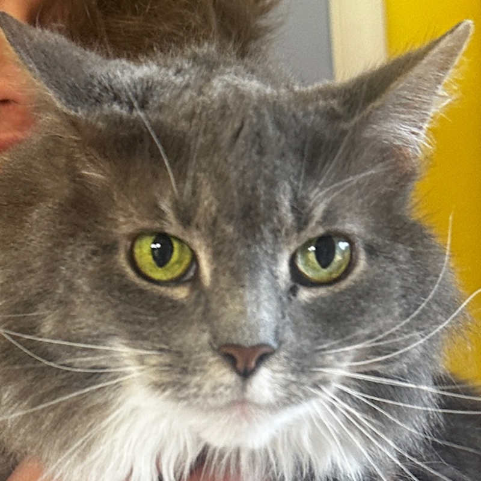

<!--
 * Landing Page for Brand Website
 * HTML5 source code
 * Author: Lach
 * Version: 1.0
-->
<!-- Makes the site have that vertical phone look -->
<div id="resolution">

    <!-- Navbar header that will have links, home, and shop -->
    <header id="navbar" class="resolution-item">
        <h1>Links</h1>
        <h1>Home</h1>
        <h1>Shop</h1>
    </header>

    <!-- Profile picture and name -->
    <section id="profile-picture-section" class="resolution-item">
        <!-- Profile picture -->
        
        <!-- Name -->
            <h2 id="name">Lach</h2>
    </section>
    
    <!-- Social Links Section-->
    <section id="social-links-section" class="resolution-item">
        {% include social-links.html %}
    </section>
    
</div>